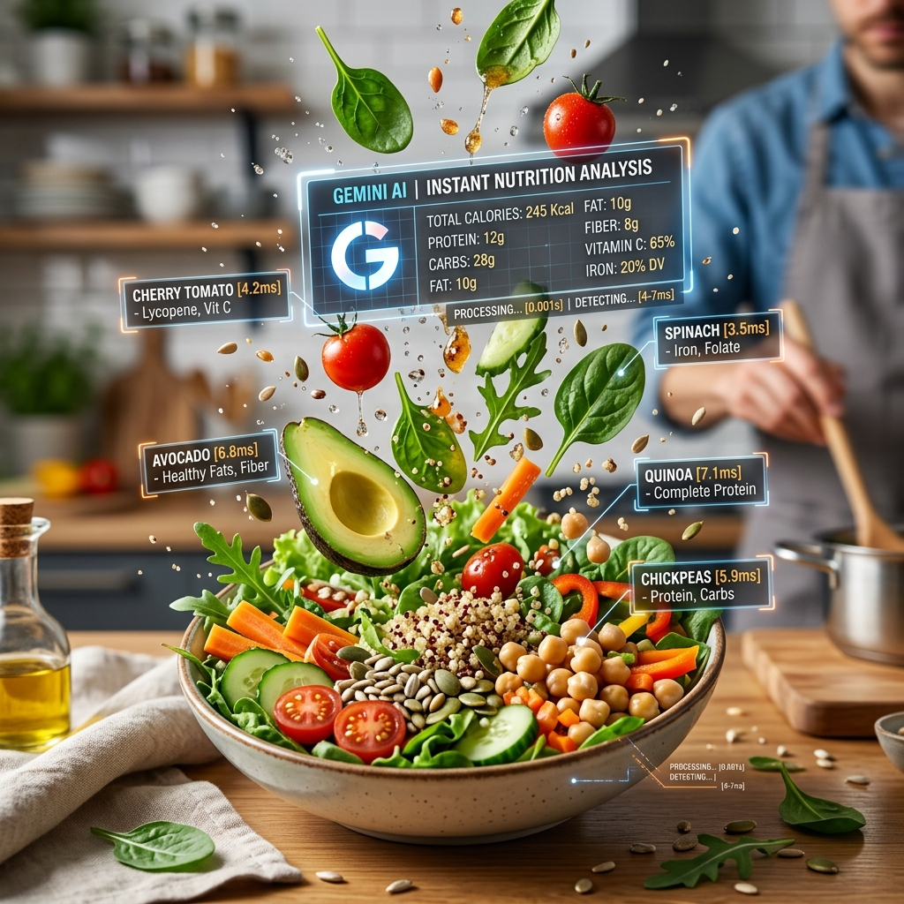

Основа точного харчування. Не друкуйте — просто фотографуйте.

Традиційні програми провалюються, бо змушують вводити дані вручну. Шукати "куряче філе" і гадати вагу — нудно. KkaloAI змінює все.
Наша технологія використовує найсучасніші моделі зору для миттєвого аналізу вашої тарілки:
Найбільша перешкода для схуднення — не брак знань, а брак часу. Усуваючи труднощі ручного пошуку, KkaloAI гарантує, що ви справді дотримуєтесь цілей. Наш AI-сканер — це не фішка, а фундаментальний інструмент для зайнятих людей.